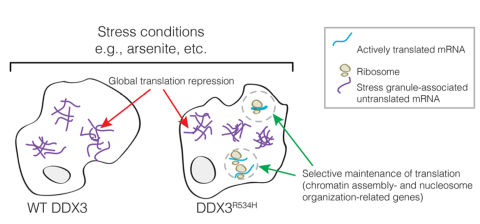
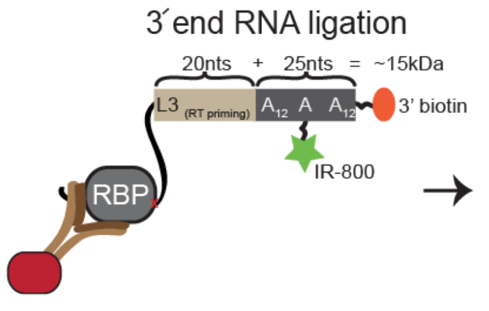
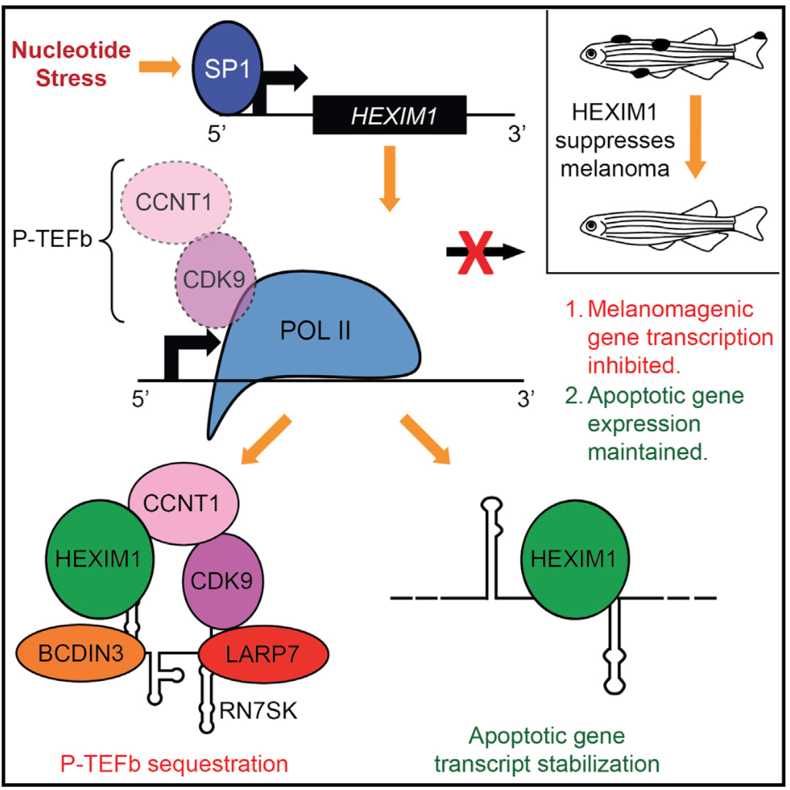
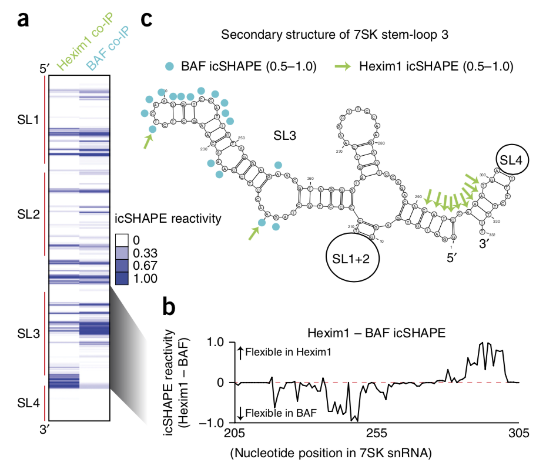
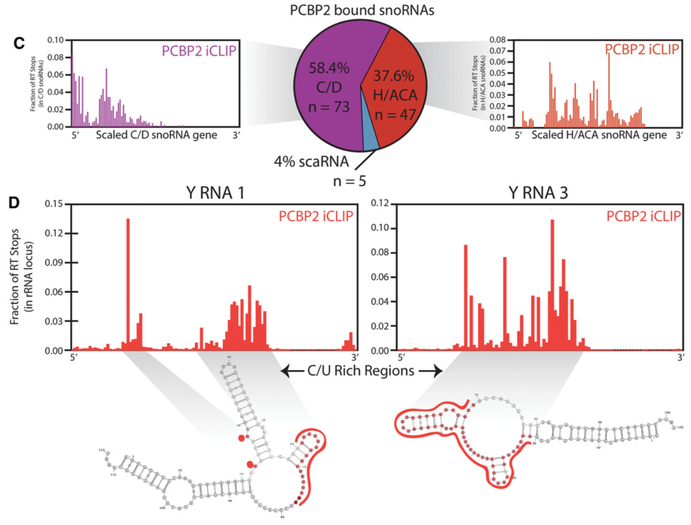
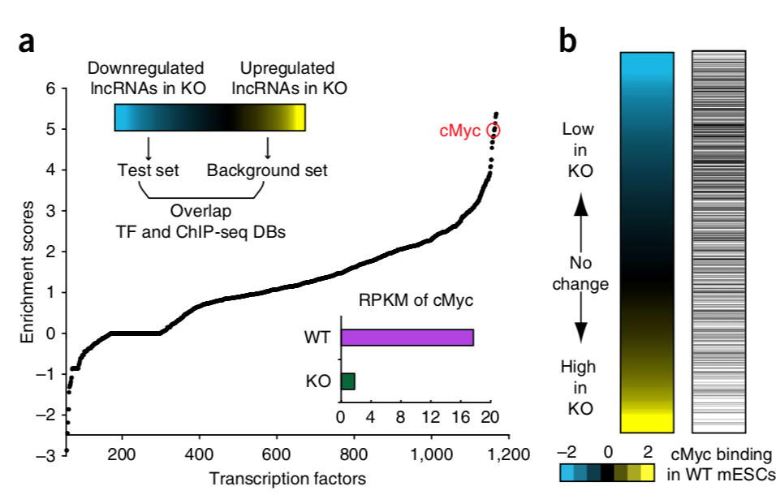

Toggle navigation
Brian Do
Home
Research Interests
Publications
Projects
Publications
Grad school
Opportunities and obstacles for deep learning in biology and medicine.
Ching T, Himmelstein DS, Beaulieu-Jones BK, Kalinin AA,
Do BT
, Way GP, Ferrero E, Agapow P-M, Xie W, Rosen GL, Lengerich BJ, Israeli J, Lanchantin J, Woloszynek S, Carpenter AE, Shrikumar A, Xu J, Cofer EM, Harris DJ, DeCaprio D, Qi Y, Kundaje A, Peng Y, Wiley LK, Segler MHS, Gitter A, Greene CS.
bioRxiv (2017)
Undergrad

Medulloblastoma-associated DDX3 variant selectively alters the translational response to stress.
Oh S, Flynn RA, Floor SN, Purzner J, Martin L,
Do BT
, Schubert S, Vaka D, Adams CM, Leib RD, Doudna JA, Chang HY, Cho YJ.
Oncotarget (2016)

Ultraefficient irCLIP pipeline for characterization for protein-RNA interactions.
Zarnegar B, Flynn RA, Shen Y,
Do BT
, Chang HY, Khavari PA.
Nature Methods (2016)

Stress from nucleotide depletion activates the transcriptional regulator HEXIM1 to suppress melanoma.
Tan JL, Fogley RD, Flynn RA, Ablain J, Yang S, Saint-Andre V, Fan ZP,
Do BT
, …, Chang HY, Young RA, Zon LI.
Molecular Cell (2016)

7SK-BAF axis controls pervasive transcription at enhancers.
Flynn RA,
Do BT
, Rubin A, Calo E, Lee B, Rale M, Kuchelmeister H, Rale M, Chu C, Kool ET, Wysocka J, Khavari PA, Chang HY.
Nature Structural and Molecular Biology (2016)

Dissecting non-coding and pathogen RNA-protein interactomes.
Flynn RA, Martin L, Spitale RC,
Do BT
, Sagan SM, Zarnegar B, Qu K, Khavari PA, Quake SR, Sarnow P, Chang HY.
RNA (2015)

Dicer-microRNA-Myc circuit promotes transcription of hundreds of long noncoding RNAs.
Zheng GXY,
Do BT
, Webster DE, Khavari PA, Chang HY.
Nature Structural and Molecular Biology (2014)
I also keep a running list of papers I've read on
CiteULike
.